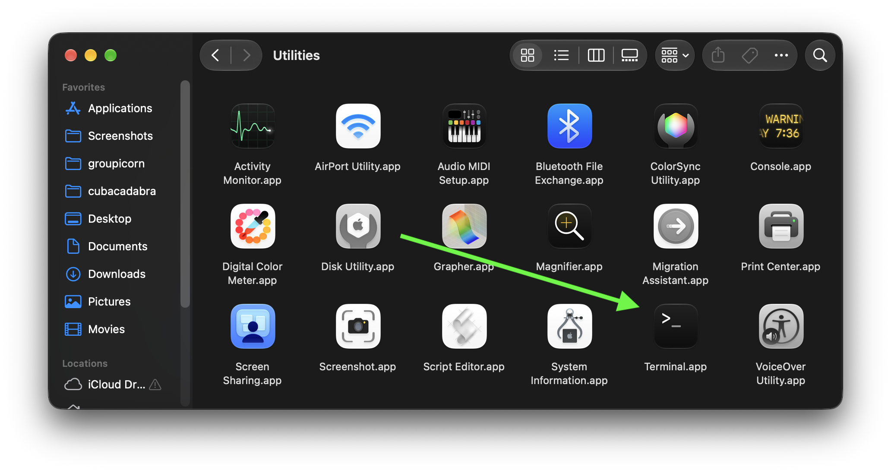
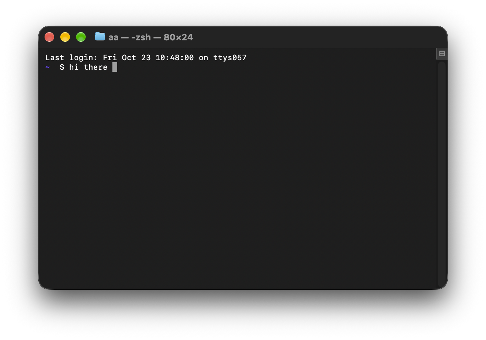
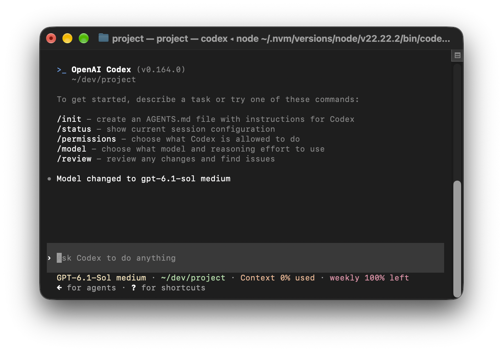

The command line or terminal is just words.

See how I wrote hi there?

Nothing broke. They are just words. You can type anything. Well there are some commands if you type you will affect things on your comptuer it's true. But the level of fear new people have about this is way too much. Just get comfortable opening terminal, typing words, and don't stress.
You can also use claude if you want but you need the $20 a month plan from either claude or chatgpt. Google or ask chatgpt "how do I install codex and run it from the command line?"
I'm purposely asking you to google or use the web interface of chatgpt because it's important I don't tell you exactly step by step how to do everything in these lessons. Part of the skill you need to learn is how to get un-stuck by asking AI.

You will know you did it right when you can type "codex" from terminal and see this.
From terminal (and press control-c to exit codex if you are still inside it) type `mkdir yapern` and then `cd yapern` which mean make a folder called yapern and then Change Directory (CD) to it. Not so bad right? Now type `codex` again and we are ready to start letting AI make our reddit clone.